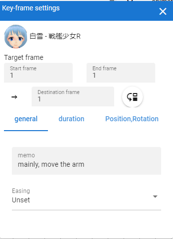
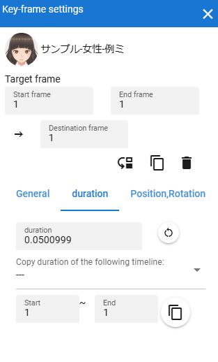
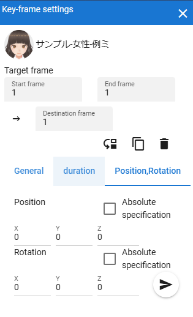

6.18. Setting keyframes
This is a settings window related to keyframes in the timeline. Although this window is an internal window, it can be displayed in a separate window depending on the settings.
Double-click a registered keyframe to open it.
 |
 |
 |
- role name:
Displays the name of the role of the timeline currently being edited.
- 対象のフレーム
- start frame / end frame:
Displays the number of the keyframe currently being edited. When selected from the timeline, the same frame number is set for both, but you can change it to any range.
For example, if the start frame is set to 10 and the end frame is set to 15, the registered keyframes within the range of 10 to 15 will be the target of the operation.
- Destination frame:
If you change this, the keyframe setting will move to that frame position. This corresponds to the start frame after moving.
- move button:
Confirms the movement of the frame position. If you enter a frame position that already has a keyframe registered, the button cannot be pressed.
- duplicate button:
Confirms the movement of the frame position. If you enter a frame position that already has a keyframe registered, the button cannot be pressed.
- delete button:
Deletes the keyframes between the start and end frames.
- General tab
- Memo:
Write a memo on the keyframe being edited. It does not affect actual movement.
- easing:
Select the easing up to the keyframe you are editing.
- duration tab
- Duration:
Manually specify the interval (seconds) from the previous registered keyframe to the keyframe being edited. Basically it is calculated automatically, but if you dare to change it, you can change it here.
- Reset duration:
Resets the interval (in seconds) before the keyframe being edited to the automatically calculated value.
- Copy duration of the following timeline::
By selecting the source timeline (role) and specifying the start and end of the keyframes registered on that timeline, you can copy the total duration value of that range.
In order to reflect after copying, it is necessary to manipulate the input box of the interval (duration).
- position, rotation tab
- Position X, Y, Z:
coordinates of each.
- Rotation X, Y, Z:
The rotation angle of each axis. Unlike the same item in the property list, here it is from -180 to +180 degrees.
- absolute designation:
If checked, each value will be an absolute value.
If not checked, the respective values will be added or subtracted from the current position and rotation.
- apply button:
The values specified in position and rotation are actually reflected.